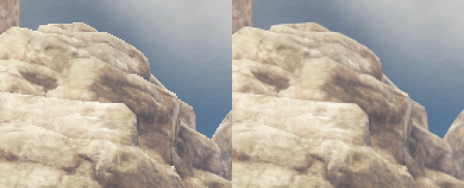
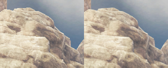
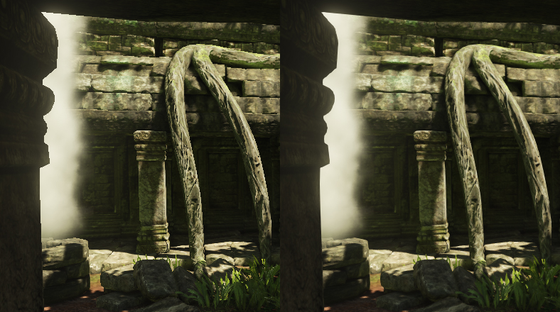

UDN
Search public documentation:
PostProcessAA
日本語訳
中国翻译
한국어
Interested in the Unreal Engine?
Visit the Unreal Technology site.
Looking for jobs and company info?
Check out the Epic games site.
Questions about support via UDN?
Contact the UDN Staff
中国翻译
한국어
Interested in the Unreal Engine?
Visit the Unreal Technology site.
Looking for jobs and company info?
Check out the Epic games site.
Questions about support via UDN?
Contact the UDN Staff
UE3 Home > Post Process Effects > Post Process Anti Aliasing Effect
Post Process Anti Aliasing Effect
|  |
|  |
| The image shows some distant rocks (for better illustration the top was magnified 2x). left: The image suffer suffers from aliasing (no MSAA) right: The same image after PostProcessingAA was applied. |
Overview
- if content gets too small (e.g. wireframe lines)
- if content is slowly moving (e.g. looking at stair cases while moving the camera lightly)
- if content was meant to be hard edged (e.g. hand drawn art or text)
|  |
| This image clearly shows that the problem of aliasing is mostly visible where there is a strong contrast. Those areas are effectively adressed by the method. However the image as a whole seems to loose a bit of the sharpness. Here MLAA can be tweaked whereas FXAA doesn't offer any control. |
How to activate?
Allows to override the post process anti aliasing type. <0: use post process settings (default: -1) 0: off 1-6: FXAA Preset 0:low quality .. 5:very high quality but slow (1 pass) 7: MLAA (requires extra render targets (requires bAllowPostprocessMLAA=True in .ini), 3 pass)Because MLAA requires extra memory it needs to be explicitly enabled. It needs to be activated by changing the following ini setting (e.g. in BaseEngine.ini) from:
bAllowPostprocessMLAA = Falseto:
bAllowPostprocessMLAA = TrueNote: The ini setting also can be changed at runtime with the following console command:
scale toggle bAllowPostprocessMLAA
Implementation details
- One pass
- Requires anisotropic texture lookup
- Three pass
- Multiple levels of different performance/quality
- Requires extra intermediate render target memory (can be optimized)
- Slightly less blurring of inner details
- 45 degree edges appear more wide
Supported platforms
- FXAA: DX9, DX11, Xbox360, PlayStation3
- MLAA: DX9, DX11 (Xbox360 and PlayStation3 untested)
References
- Morphological Antialiasing (MLAA) by Intel
http://visual-computing.intel-research.net/publications/papers/2009/mlaa/mlaa.pdf
Thanks
- Intel for developing MLAA
- AMD CAS team for the GPU MLAA implementation
- NVIDIA for the FXAA implementation